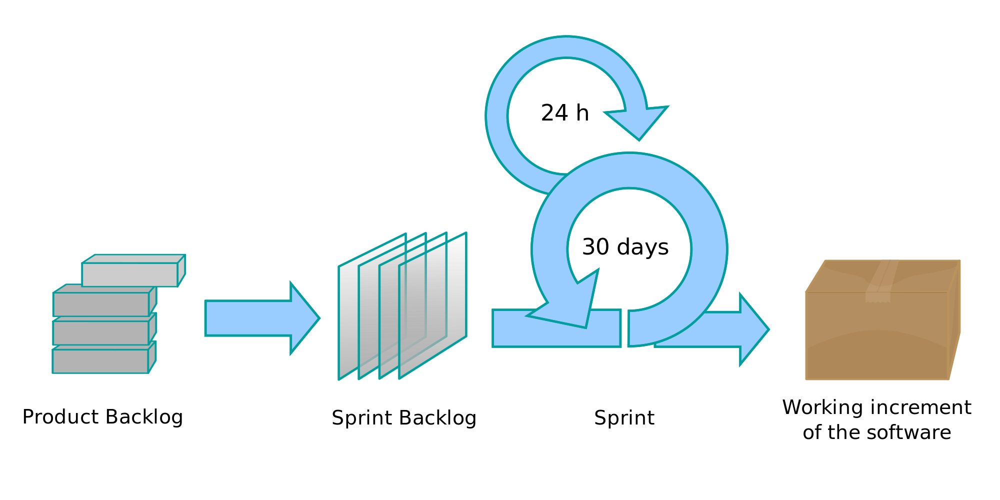

Maria Eduarda Meregali 


|

Igor Oliveira de Sousa
|
Esse é um termo já bem popular no mundo da tecnologia, sendo largamente utilizado por times de desenvolvimento de software, mas por incrível que pareça, quase completamente desconhecido por profissionais de outras áreas, incluindo os profissionais de planejamento e controladoria.
De forma resumida, como piloto da aeronáutica, para ele, era possível comparar o processo de gestão e finalização de um projeto com a delicada missão de pousar um avião. De acordo com ele e sua experiência enquanto piloto, o grande desafio de pousar um avião consiste no fato de que não existe uma fórmula fixa para fazer isso. Então, a todo segundo, o piloto precisa fazer ajustes para adequar a aeronave à rota de pouso. O mesmo vale para um grande projeto, que envolve várias pessoas e uma enorme complexidade de atividades.
Partindo desse princípio, a metodologia Scrum Agile propõe que um projeto seja dividido em diversos (pequenos) ciclos de atividades, com reuniões frequentes para que a equipe possa alinhar o que vem fazendo e pensar formas de melhorar o processo com agilidade. Assim como no caso do avião, essa metodologia propõe que o projeto seja acompanhado sempre bem de perto e passe por mudanças de planejamento o tempo todo, de forma livre e pouco engessada.
Uma pequena observação: muitos profissionais se referem ao Scrum como uma metodologia Ágil, e não estão errados. A metodologia Ágil (ou Agile em inglês) são “métodos e práticas baseadas nos valores e princípios expressos no Manifesto Ágil (Agile Manifest)” e o Scrum é um framework (ou uma ferramenta) que é usada para implementar o desenvolvimento Ágil.
Na imagem abaixo fica fácil de entender esse funcionamento e na sequência vamos explicar cada um dos termos da figura.
Você sabe o que é Sprint no Scrum? E o quadro Kanban? Muitas vezes os jargões e palavras técnicas usadas na Gestão Empresarial para explicar como algo funciona podem ser mais complicadas do que funcionamento em si. Esse é o caso do vocabulário relacionado ao modelo do Scrum.
Por isso, preparamos um mini-glossário básico para entender o vocabulário de desenvolvimento do Scrum:
Além do planejamento, o Scrum foca muito no acompanhamento constante do projeto. As reuniões são rápidas e frequentes, com a equipe se reunindo o tempo todo para trocar experiências e avaliar o que foi feito, bem como, planejar as próximas atividades.
Mais do que isso, o Scrum bate bastante na tecla da transparência na gestão. Uma das regras mais importantes da metodologia é que todos no projeto saibam o que está sendo feito e que as atividades de cada ciclo sejam mostradas para toda a equipe de forma visual (no geral e diariamente). O caso do quadro Kanban de Scrum é um bom exemplo e que pode ser até feito online, em uma ferramenta de gestão de projetos. como o Trello. Veja um exemplo de quadro Kanban aqui.
As equipes de projetos geridos com a metodologia Scrum são compostas basicamente por três papéis:
O Scrum, apesar do nome estranho, traz uma abordagem à gestão de projetos e foi desenvolvida por Jeff Sutherland, que, no vídeo ao lado (em inglês, do TEDx), fala sobre a inspiração que o levou a desenvolver a técnica.
|
Maria Eduarda Meregali
|
Igor Oliveira de Sousa
|